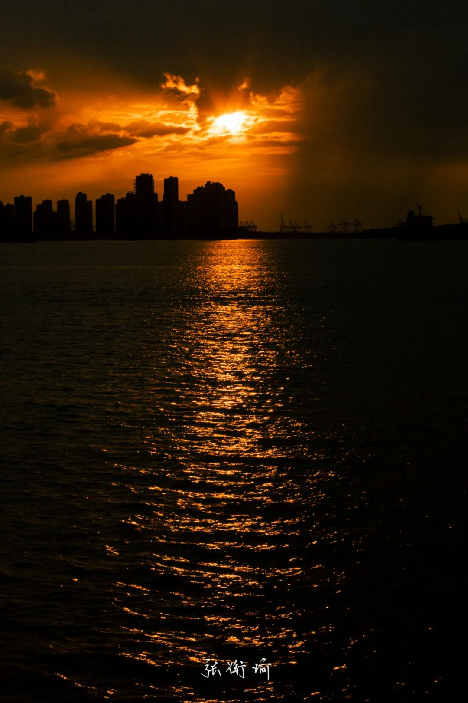
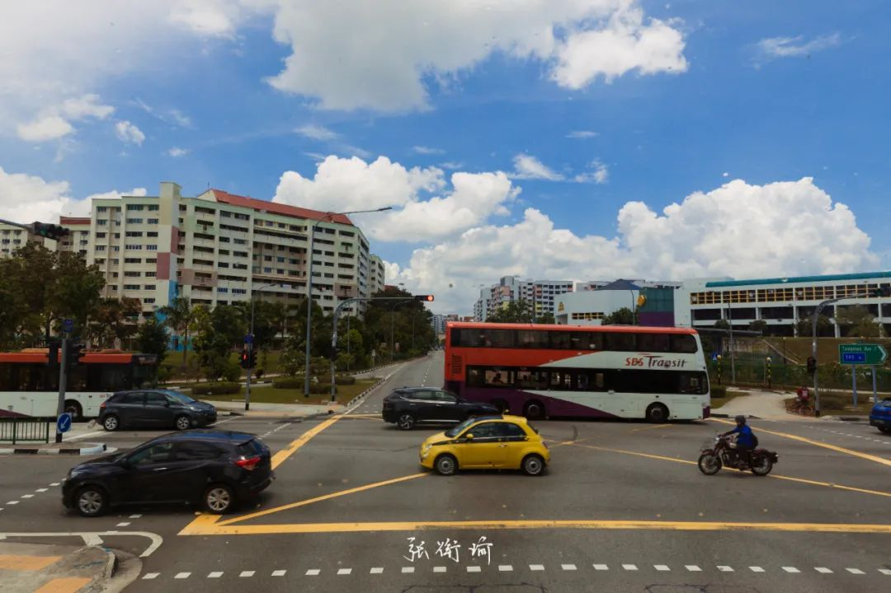
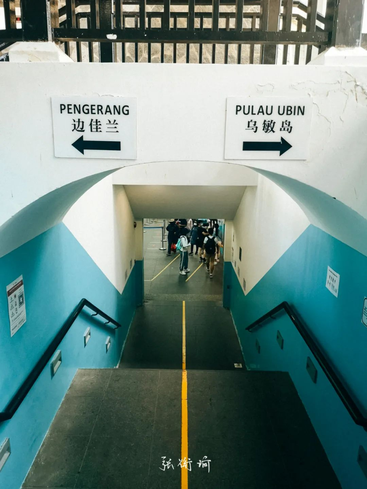
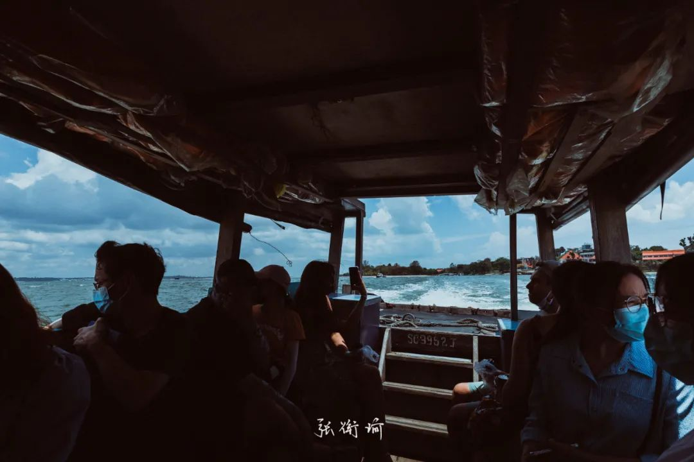
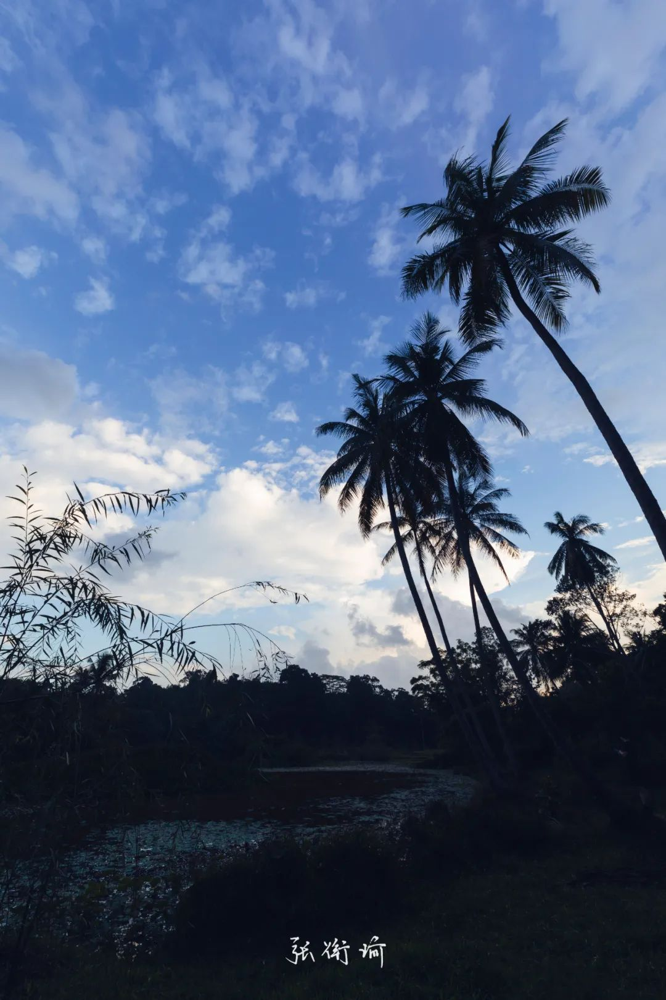
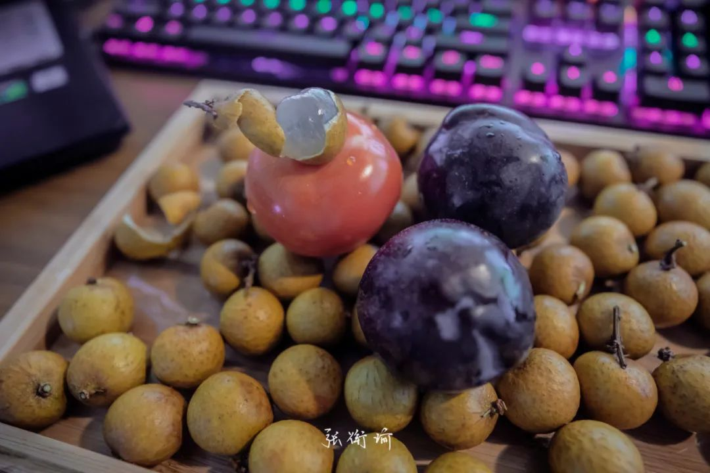

本文是张衔瑜第189篇推文 共计2590个字，15张图
你拿什么还，或者说你还什么。
这是一个很有特征的新加坡式问句。
记得高中在做文言文赏析的时候，老师总是要我们先找到一个句子里边的动词。比如柳宗元的《种树郭橐驼传》：“官命促尔耕，勖尔植，督尔获，早缫而绪，早织而缕，字而幼孩，遂而鸡豚。”就是一段很有特色的动词组织句子。
在如上所说的新加坡式句子里，“还钱”的“还”成为了一个动词，在这里实际上想表达的意思是你用什么方式支付，现金PayWave或者其他的什么。至少在我平常使用的中文、以及那些遍地通假的古代汉语里，好像我都还没有接触到类似的意思。查了一下康熙字典，“还”可以同“偿”，语出杜甫《岁晏行》：割慈忍爱还租庸。
**
乌敏岛是新加坡的第二大外岛，算是难得能看到原生马来群岛生态的地方。于是周六去了一趟，和实验室师兄师姐还有两粒酱。林间小路里骑行，因为不确定前边的路怎么样，就问前路回来的人路况如何。一位疑似开始和同伴交流着闽南语的人，用中文普通话回我们说：
“前面路很冲诶，不建议第一次来乌敏岛的人去滑。”
“对啊那边很难踏，我们也是刚刚去了又回来。”
其实这里就会发现他们用的动词不一样。在说起骑单车的时候，路上这位大哥用的两个动词也有所不同——踏和滑。踏，这个字疑似同源于把自行车/单车叫做脚踏车；至于滑，小哥一边说着一边对我们比手势，在车把上摇来摇去。觉得可能仅仅指自行车在脚不踩的时候，利用下坡势能转动能这样一直滑。
作为原始生态区保留下来的乌敏岛，一路过来既有马六甲海峡附近的马来亚神祇拿督公、拿督姑娘，也有印度神、东南沿海的大伯公和不知道从密宗or其他流派的《右遶佛塔功德经》及其供奉。树木像瘴气一样扰扰绿云，阴翳天空的澄澈。有渔民、有新烧火焰，不难想起“柴扉”这个词：山中相送罢，日暮掩柴扉。
**
奇怪的中文语法像是组织撑了另一个方言区，正如在这边会把中文称为华语华族的语言。我们往往对国境、边界这些问题拎得很清楚，你说的国内是什么国内，你说的境外是什么境外，相对什么而言。所以在新加坡司机说国内的时候，我都会在一开始想成是新加坡国内。但事实上如果是华人司机用中文说国内，不论Ta知不知道你是中国人，这个国内都大部分时候指代着中国。如果说新加坡怎样，他们会直接说新加坡。
在我们对字词的敏感程度上而言，多少会将次认为是某种这篇地区上生活人的文化不自信、或者说对另一种生活的向往。我写下这些，有可能是源于在推敲字词上的习惯，也有可能是带有一些侧写意味的观察。没有去归属了。
//
抛开比较扎实的训诂推理，在我打开了弹幕模式之后，嘴碎往往是从奇奇怪怪的内容里生发出来。
<你恐怕是被猪油蒙了心。>
[猪油蒙心？！还有这等好事]
<古人说：春雨贵如油。>
[古人也说：城春草木深。意思是如果想识得春天的味道，就应该春油炒上一盘鲜切菜心]
[人在吃，称在看。]
[真的馋疯了的人，看到牛肉膏蛋白胨都觉得好吃。]
注：我觉得不用注。
[2021年政府工作报告指出：解决好吃饭问题始终是头等大事]
起床后，往镜子里看。我想如果我现在生活在八零年代，如果没有在舞台上摔烂过十把吉他，是睡不出来这样发型的。但就是硬扛着，也要等到二月二龙抬头再去理发。
//
和好朋友聊后摇，话锋一转，说到一些更深刻的话题。比如如果可以一直当小孩，你会选择深刻吗？朋友理解的不会，而我选的会。
虽然还在只是文字朋友的时候，但也没有因此而减弱聊深度话题时候对自己倾向的坚持。我觉得朋友之间没有避讳分歧，亦即在一些很自我问题上的个性，反倒是我很期待的一件事。如果什么都一样，那还有什么意思。
前几天在理想国看到的梁鸿贾樟柯访谈里：
我们描写生活不能塑造超越现实情况、超越实际情况的理想主义人物，因为恰恰我们理想主义式的描写，超越现实生活的情况，带来更糟糕的东西——虚假。
原文谈：没有话语权的人，就是“边缘人”吗？类似的论断也很不错。以及最近在读的书《零年:1945 现代世界诞生的时刻》[荷兰]伊恩·布鲁玛，是一本理想国译丛里边的书。当以二战战后各方的表现来看，觉得尤其可以以此来从社会结构意义上看这部分人的社会职能。
又，1945-1949年的世界史，在我的印象里在课本上是不多见的。除了雅尔塔会议和波茨坦公告这些在和平新秩序之类标题里提到的之外，我们在自我的历史叙事里开始讲起了本民族的史诗，而缺少了外部世界在这时节磋商的秩序。这承袭于二战和二战前的体系，也是本民族详细历史里即将出现的朝鲜半岛支线。
序作者是许知远。最近在地铁上，以及二月二排队龙剃头的队伍里慢慢地读着这本书。终于在刚刚和老板凉分买回来的龙眼时，被好朋友Nancy拿了过去。所以我从书架上抽下来了一本《傅山的交往和应酬——艺术社会史的一项个案研究》作者白谦慎。
//
写下这些像日记一样话的时候，就想起最近看到我关注的另一个奇怪博主洗奶娃在她的公众号里写，大意为：不要低估我的读者里货真价实的活人在社会上的活跃程度。原因是因为她在公众号记述自己喜欢另一个人的心路历程，被对方的朋友看到了之后觉得很像于是转发给了那个人。迷醉程度不亚于自己在跑一千米的时候，看到了最近心水的人然后对方打了个招呼于是你也say Hi然后所有的步子都变得滑板鞋了起来。
说起滑板鞋就想起庞麦郎被送进了精神病医院
By 庞的经纪人还是什么代言人
//
坚持三天早睡早起之后
因为之前的作息触目惊心，于是十二点前睡&八点前后一小时内起床可以认为是健康的早睡早起。并且由此可以三餐都吃到七八分饱。
偶尔也会因为事情做不完或者想看电影继续肝。比如看完了王家卫的《重庆森林》，除了掉帧的镜头多了之后令人不好怎么评价之外，其他的都无比舒适。
第二天还是一样地醒来，继续干活。
刚刚去称体重，发现瘦了七斤。即使基数不小，但也很神奇。毕竟除了走路上下班、出门拍拍照，几乎没有别的运动。
后来发现是称的角度问题。看来心态认知还是很端正。
//
今天在实验室看鲍德里亚的《消费社会》
扩大到商业中心和未来城市规模的杂货店，是每一个现实生活、每一个社会客观生活的升华物。这里废除的不仅是工作和钱，而且是季节——最终一致了的循环本身成了遥远的残迹！
神奇的是，书的封面用以一个巨大的二维码作为封皮。好奇如我当然尝试了一下是不是可以直接扫开这个二维码看看有什么好东西在里边。链接到的是南京大学张异宾的一篇讲录。所以让人很奇怪的是我原来看的那一本也是南京大学讲《反鲍德里亚》的应该是张一兵。然后一查，原来是张异宾笔名张一兵。
事实上反而是张一兵的那本书，我会更加觉得出彩一些。
~~
最近图还挺多的。少放一点
*

*
*




*
*
